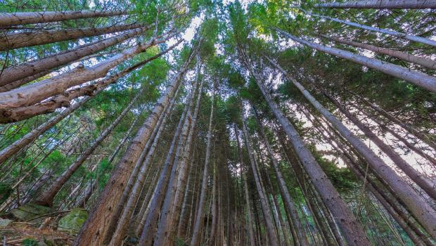
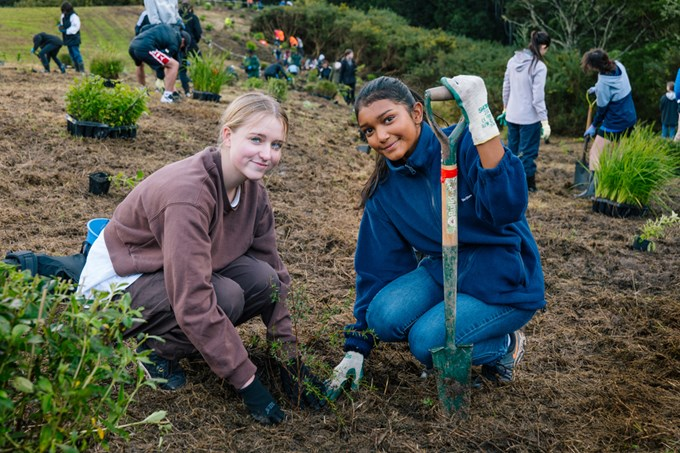

What is this website about?
Welcome to Save our trees. On this website you can find reliable information about deforestation and native forest loss in new zealand and information/facts about the problem.
Our mission is to educate fellow kiwis about the impacts deforestation has on the climate and our native bush.
This website is targeted towards schools students and teachers looking for resources but can also be used by the wider public.

Who are we?
Save our trees is made up of civilians and school students worried about the futures of the native forests in new zealand.
Anyone can join and the only requirement is that you hold up our core values of kaitiakitanga for the enviroment and showing manakitanga to the group.
Together, we raise awareness about issues regarding deforestation, plan protests for stronger forest protection laws, and participate in native bush planting in the community.
By getting members from all ages and backgrounds we believe we can make a lasting impact on Aotearoa's unique bush for years to come